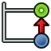
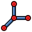
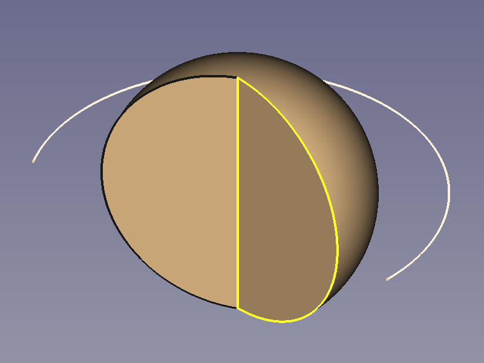
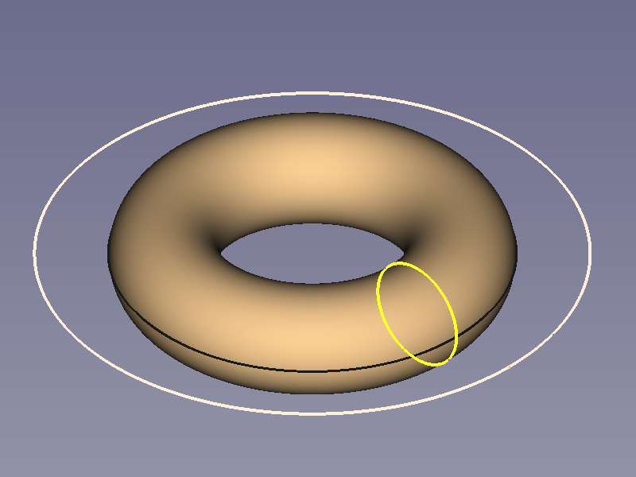
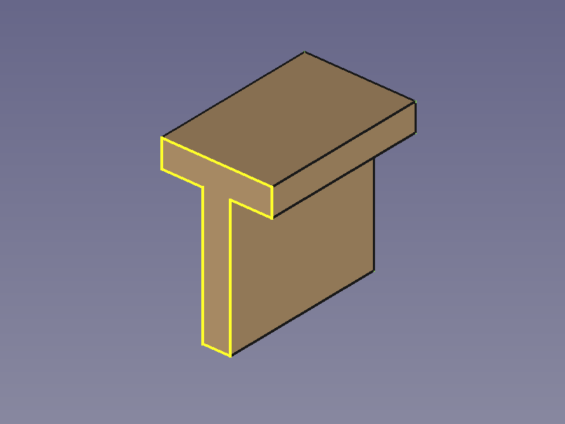
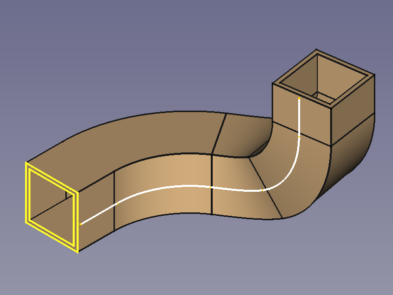
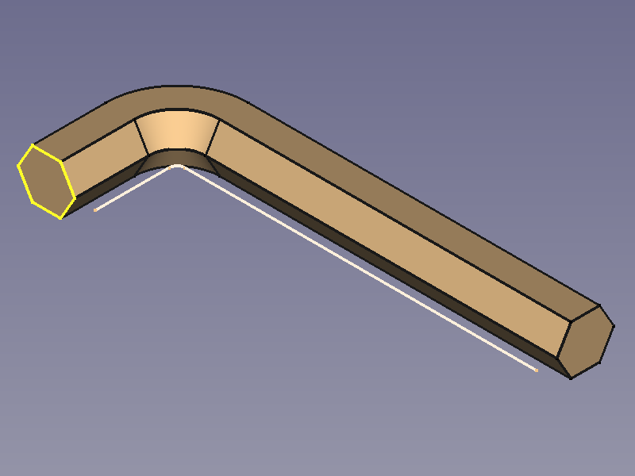
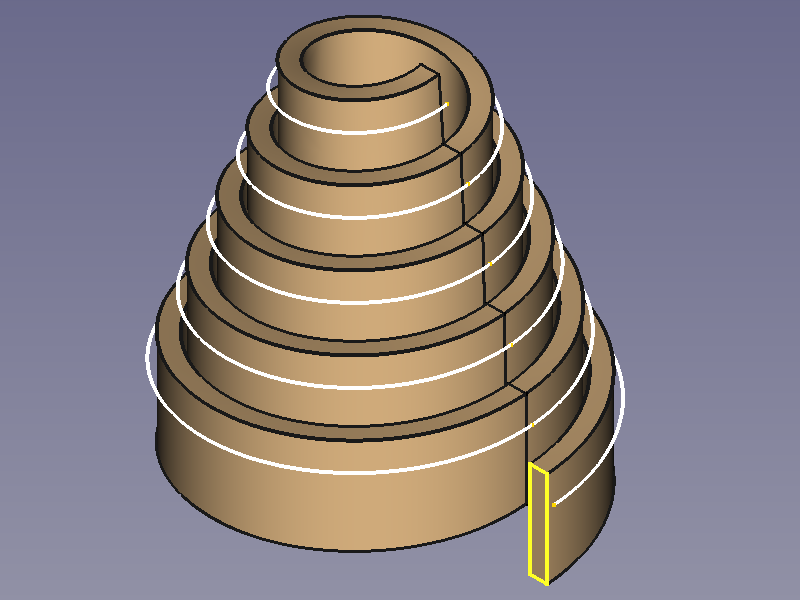

PartDesign Workbench/zh-cn

Introduction
零件设计工作台采用基于特征的建模方法论，单个零部件通过“实体对象容器（Body）”来承载呈现。Body容器会定义专属局部坐标系，并且包含所有累积生成的特征，这些特征共同构成完整零部件。 绝大多数特征依托参数化草图生成，整体分为增材特征与减材特征两大类。举例来说：拉伸凸台工具（Pad tool）会将草图拉伸成型，叠加到正在构建的实体上，实现增材建模；拉伸切除工具（Pocket tool）则会将草图拉伸后，从现有实体上挖除对应部分，实现减材建模。 每一个特征都是累积生成的，后续特征完全基于前序特征完成后的实体结果构建。除此之外，也可直接调用基础图元（如增材圆柱体、增材球体等），或是将Body外部创建的实体，直接作为特征纳入零件设计流程。
有关此流程的更完整说明，请参阅特征编辑 (Feature editing) 页面；随后可查看使用 PartDesign 创建简单零件 (Creating a simple component with PartDesign) 以开始创建实体模型。
 零件工作台 (Part Workbench) 提供了另一种构造实体几何 (constructive solid geometry, CSG) 方法来构建形体。如需详细对比零件工作台与零件设计工作台的区别，请参阅 Part and Part Design（零件与零件设计） 页面。
零件工作台 (Part Workbench) 提供了另一种构造实体几何 (constructive solid geometry, CSG) 方法来构建形体。如需详细对比零件工作台与零件设计工作台的区别，请参阅 Part and Part Design（零件与零件设计） 页面。
{kind=link}
Tools
零件设计工具全部位于 零件设计 菜单中，以及加载零件设计工作台后显示的 PartDesign 工具栏内。
Part Design Helper Features toolbar

 新建草图:
新建草图:
- 新建草图：在选定的平面或面上创建新草图。若执行此工具时未选中任何面，系统将在任务面板中提示用户选择一个平面。随后界面将切换至**草图绘制工作台（Sketcher Workbench）**并进入草图编辑模式。
 Attach Sketch: attaches a sketch to geometry selected from the active body.
Attach Sketch: attaches a sketch to geometry selected from the active body.
 编辑草图：打开选定的草图以进行编辑。
编辑草图：打开选定的草图以进行编辑。
 校验草图：检查各点的公差并进行调整。
校验草图：检查各点的公差并进行调整。
 检查几何体：检查所选对象的几何体是否存在错误。
检查几何体：检查所选对象的几何体是否存在错误。
 子形状绑定器：创建一个形状绑定器，以引用来自一个或多个父对象的几何元素。
子形状绑定器：创建一个形状绑定器，以引用来自一个或多个父对象的几何元素。
 克隆：创建所选实体的副本。
克隆：创建所选实体的副本。
Part Design Modeling Features toolbar
Additive tools
These are tools for creating base features or adding material to an existing body.
 Pad: extrudes a solid from a selected sketch.
Pad: extrudes a solid from a selected sketch.
 Revolution: creates a solid by revolving a sketch around an axis. The sketch must form a closed profile.
Revolution: creates a solid by revolving a sketch around an axis. The sketch must form a closed profile.
 Additive Loft: creates a solid by making a transition between two or more sketches.
Additive Loft: creates a solid by making a transition between two or more sketches.
 Additive Pipe: creates a solid by sweeping one or more sketches along an open or closed path.
Additive Pipe: creates a solid by sweeping one or more sketches along an open or closed path.
 Additive Helix: creates a solid by sweeping a sketch along a helix.
Additive Helix: creates a solid by sweeping a sketch along a helix.
 Additive Primitive:
Additive Primitive:
- Additive Box: creates an additive box.
 Additive Cylinder: creates an additive cylinder.
Additive Cylinder: creates an additive cylinder.
 Additive Sphere: creates an additive sphere.
Additive Sphere: creates an additive sphere.
 Additive Cone: creates an additive cone.
Additive Cone: creates an additive cone.
 Additive Ellipsoid: creates an additive ellipsoid.
Additive Ellipsoid: creates an additive ellipsoid.
 Additive Torus: creates an additive torus.
Additive Torus: creates an additive torus.
 Additive Prism: creates an additive prism.
Additive Prism: creates an additive prism.
 Additive Wedge: creates an additive wedge.
Additive Wedge: creates an additive wedge.
Subtractive tools
These are tools for subtracting material from an existing body.
 Pocket: creates a pocket from a selected sketch.
Pocket: creates a pocket from a selected sketch.
 Hole: creates a hole feature from a selected sketch. The sketch must contain one or multiple circles.
Hole: creates a hole feature from a selected sketch. The sketch must contain one or multiple circles.
 Groove: creates a groove by revolving a sketch around an axis.
Groove: creates a groove by revolving a sketch around an axis.
 Subtractive Loft: creates a solid shape by making a transition between two or more sketches and subtracts it from the active body.
Subtractive Loft: creates a solid shape by making a transition between two or more sketches and subtracts it from the active body.
 Subtractive Pipe: creates a solid shape by sweeping one or more sketches along an open or closed path and subtracts it from the active body.
Subtractive Pipe: creates a solid shape by sweeping one or more sketches along an open or closed path and subtracts it from the active body.
 Subtractive Helix: creates a solid shape by sweeping a sketch along a helix and subtracts it from the active body.
Subtractive Helix: creates a solid shape by sweeping a sketch along a helix and subtracts it from the active body.
 Subtractive Primitive:
Subtractive Primitive:
- Subtractive Box: adds a subtractive box to the active body.
 Subtractive Cylinder: adds a subtractive cylinder to the active body.
Subtractive Cylinder: adds a subtractive cylinder to the active body.
 Subtractive Sphere: adds a subtractive sphere to the active body.
Subtractive Sphere: adds a subtractive sphere to the active body.
 Subtractive Cone: adds a subtractive cone to the active body.
Subtractive Cone: adds a subtractive cone to the active body.
 Subtractive Ellipsoid: adds a subtractive ellipsoid to the active body.
Subtractive Ellipsoid: adds a subtractive ellipsoid to the active body.
 Subtractive Torus: adds a subtractive torus to the active body.
Subtractive Torus: adds a subtractive torus to the active body.
 Subtractive Prism: adds a subtractive prism to the active body.
Subtractive Prism: adds a subtractive prism to the active body.
 Subtractive Wedge: adds a subtractive wedge to the active body.
Subtractive Wedge: adds a subtractive wedge to the active body.
Boolean
 Boolean Operation: imports one or more Bodies or PartDesign Clones into the active body and applies a Boolean operation.
Boolean Operation: imports one or more Bodies or PartDesign Clones into the active body and applies a Boolean operation.
Part Design Dress-Up Features toolbar
These tools apply a treatment to edges or faces.
 Fillet: fillets (rounds) edges of the active body.
Fillet: fillets (rounds) edges of the active body.
 Chamfer: chamfers edges of the active body.
Chamfer: chamfers edges of the active body.
 Draft: applies an angular draft to selected faces of the active body.
Draft: applies an angular draft to selected faces of the active body.
 Thickness: creates a thick shell from the active body and opens selected face.
Thickness: creates a thick shell from the active body and opens selected face.
Part Design Transformation Features toolbar
These are tools for transforming existing features.
 Mirror: mirrors one or more features.
Mirror: mirrors one or more features.
 Linear Pattern: creates a linear pattern of one or more features.
Linear Pattern: creates a linear pattern of one or more features.
 Polar Pattern: creates a polar pattern of one or more features.
Polar Pattern: creates a polar pattern of one or more features.
 Multi-Transform: creates a pattern by combining any of the transformations mentioned above, as well as the Scale transformation.
Multi-Transform: creates a pattern by combining any of the transformations mentioned above, as well as the Scale transformation.
- Scale: scales one or more features. This is not available as a separate transformation tool.
{kind=link}
Additional tools
Some additional tools available in the Part Design menu:
 Shape Binder: creates a shape binder referencing geometry from a single parent object.
Shape Binder: creates a shape binder referencing geometry from a single parent object.
- Involute Gear: creates an involute gear profile that can be padded.
{kind=link}
- Sprocket: creates a sprocket profile that can be padded.
{kind=link}
- Shaft Design Wizard: Generates a shaft from a table of values and allows to analyze forces and moments. The shaft is made with a revolved sketch that can be edited.
{kind=link}
- Suppressed: checkbox to disable a specific feature without deleting it. introduced in 1.0

Set Tip: redefines the tip, which is the feature exposed outside of the Body.
{kind=link}
- Move Object To…: moves the selected sketch, datum geometry or feature to another Body.
{kind=link}
- Move Feature After…: allows reordering of the Body tree by moving the selected sketch, datum geometry or feature to another position in the list of features.
{kind=link}
Obsolete tools
 Create a datum plane: creates a datum plane in the active body. This tool is not available in 1.1 and above.
Create a datum plane: creates a datum plane in the active body. This tool is not available in 1.1 and above.
- Create a datum line: creates a datum line in the active body. This tool is not available in 1.1 and above.
{kind=link}
- Create a datum point: creates a datum point in the active body. This tool is not available in 1.1 and above.
{kind=link}

Create a local coordinate system: creates a local coordinate system attached to datum geometry in the active body. This tool is not available in 1.1 and above.
{kind=link}
- Migrate: migrates files from FreeCAD versions below 0.17 to version 0.17. This tool is not available in 1.0 and above.
{kind=link}
Preferences
- Preferences: preferences for the PartDesign Workbench.
- Fine tuning: some extra parameters to fine-tune PartDesign behavior.
{kind=link}
Tutorials
- How to use FreeCAD, a website describing the workflow for mechanical design.
- Creating a simple part with PartDesign
- Basic Part Design Tutorial 019
- PartDesign Bearingholder Tutorial I (needs updating)
- PartDesign Bearingholder Tutorial II (needs updating)
Examples
For some ideas of what can be achieved with Part Design tools, have a look at: PartDesign examples.
     
- Getting started
- Installation: Download, Windows, Linux, Mac, Additional components, Docker, AppImage, Ubuntu Snap
- Basics: About FreeCAD, Interface, Mouse navigation, Selection methods, Object name, Preferences, Workbenches, Document structure, Properties, Help FreeCAD, Donate
- Help: Tutorials, Video tutorials
- Workbenches: Std Base, Assembly, BIM, CAM, Draft, FEM, Inspection, Material, Mesh, OpenSCAD, Part, PartDesign, Points, Reverse Engineering, Robot, Sketcher, Spreadsheet, Surface, TechDraw, Test Framework
- Hubs: User hub, Power users hub, Developer hub
- Helper tools: New Body, New Sketch, Attach Sketch, Edit Sketch, Validate Sketch, Check Geometry, Sub-Shape Binder, Clone
- Modeling tools:
- Additive tools: Pad, Revolution, Additive Loft, Additive Pipe, Additive Helix, Additive Box, Additive Cylinder, Additive Sphere, Additive Cone, Additive Ellipsoid, Additive Torus, Additive Prism, Additive Wedge
- Subtractive tools: Pocket, Hole, Groove, Subtractive Loft, Subtractive Pipe, Subtractive Helix, Subtractive Box, Subtractive Cylinder, Subtractive Sphere, Subtractive Cone, Subtractive Ellipsoid, Subtractive Torus, Subtractive Prism, Subtractive Wedge
- Boolean: Boolean Operation
- Dress-up tools: Fillet, Chamfer, Draft, Thickness
- Transformation tools: Mirror, Linear Pattern, Polar Pattern, Multi-Transform, Scale
- Additional tools: Shape Binder, Involute Gear, Sprocket, Shaft Design Wizard
- Context menu: Suppressed, Set Tip, Move Object To…, Move Feature After…
- Preferences: Preferences, Fine tuning